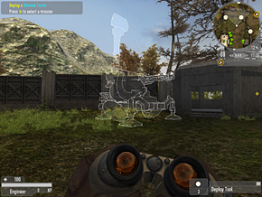
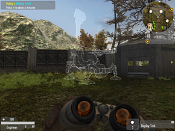

Deployables
The Strogg deployables plummet from orbit in a plume of flame and smoke, while the GDF’s Jotun tactical lifts planes overfly the drop site and the mighty Magog heavy lifters pause significantly to drop their precious loads.
Both teams' APTs and AVTs have a detection radius that's slightly larger than their firing radius, so if you're approaching them from a long way off you may see them swivel to face you, giving you warning you're about to be fired at if you proceed.
Defence turrets have a 170° engagement arc. Generally, if you're behind a defence turret, it won't shoot at you. If you fire at it, it'll turn and shoot at you no matter where you are. If you're going to plant anything explosive on a turret, or attempt to hack it, you'll need to make sure you're approaching it from the right direction, and that by so doing you're not straying into the engagement arc of another turret.
You can see the importance of orientating your turrets correctly when you're deploying them - if you don't point them in the right direction to start off with, your enemies may be able to stroll past them, and not even need to disable or destroy them.
You only have to take away 33% of a deployable’s health to disable it. If the deployable is too severely damaged, the enemy will simply replace it, possibly somewhere you can’t see.
You could deliberately disable rather than destroy a vital deployable and then plant a mine (if you’re a GDF Engineer or Strogg Constructor) or boobytrap (if you’re a GDF Covert Ops) or ready a Flyer Drone (if you’re a Strogg Infiltrator) to kill any dutiful Constructors or Engineers trying to repair it.
Placing Deployables
Several classes are able to deploy weapons systems onto the battlefield. Deployments can only be dropped in a territory you own - indicated by the green territory border on the command map.
To deploy, select your Deployment Tool (5) and press the Fire/Activate Key to enter the third-person deployment view.
 


Cycle to the weapon you wish to deploy by tapping the USE (F) key.
Use your movement keys and mouse to fine a location where the deployment grid and the wire frame deployable are green, then press the Fire/Activate Key.
Use your mouse to rotate the wire frame weapon to point in the direction you wish it to fire (use the straight yellow arrows on the ground as a guide).
Press the Fire/Activate key to call in the deployment.
Once your requested deployment arrives, a representation of it appears in the bottom right portion of you HUD, providing health and firing status of you deployable at all times.